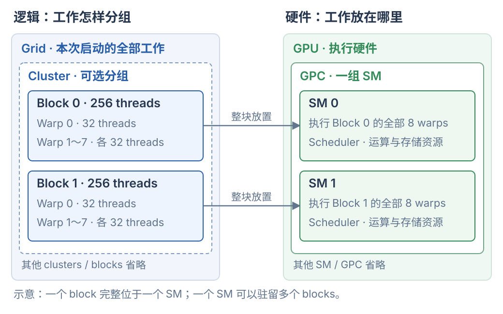

一次 kernel 启动产生一个 grid；grid 包含 blocks，block 内的线程按每 32 个组成 warp。启用 thread block cluster 时，grid 里的若干 blocks 组成一个 cluster。一个 block 的所有线程在同一个 SM 上执行；一个 SM 可以同时驻留多个 blocks。
1. 工作分组与硬件位置
CUDA 中要分别看两套层级：一套描述程序怎样分工，一套描述承接这些工作的硬件。
| 视角 | 层级 | 表达什么 |
|---|---|---|
| 逻辑工作 | Grid → Cluster（可选）→ Block → Warp → Thread | 本次计算包含哪些线程、怎样分组协作 |
| 硬件 | GPU → GPC → SM → 各类执行单元 | 工作放在哪里、由哪些硬件发出和执行指令 |
GPC 是 Graphics Processing Cluster，硬件上包含一组 SM。它与软件中的 thread block cluster 是两个不同对象。CUDA Core、Tensor Core 等位于 SM 内，是执行指令的硬件；线程没有永久独占某一个 Core。

图中只展开一个含两个 blocks 的 cluster，箭头表示一种可能的放置方式。每个 block 有 256 个线程，即 8 个 warps；cluster 内的 blocks 可以位于不同 SM，但仍受同一 GPC 的位置约束。图中每个 SM 只画一个 block，不代表 SM 只能驻留一个 block。
来源：NVIDIA 编程模型：硬件、Blocks、Grids 与 Clusters。
2. 一次 launch 产生多少工作
先看一维启动。下面的 kernel 已在别处定义，x、y 是传入的设备指针；此处仅展示启动方式：
kernel<<<12, 256>>>(x, y); // 12 个 blocks，每个 block 256 个 threads
| 对象 | 本例数量与编号 |
|---|---|
| Grid | 1 个，包含这次启动的全部工作 |
| Block | 12 个，blockIdx.x 为 0～11 |
| 每个 block 的 threads | 256 个，threadIdx.x 为 0～255 |
| 每个 block 的 warps | 256 / 32 = 8 个 |
| 整个 grid 的 threads | 12 × 256 = 3072 个 |
| 整个 grid 的 warps | 12 × 8 = 96 个 |
一维情况下，常用下面的式子为每个线程分配数据位置：
int i = blockIdx.x * blockDim.x + threadIdx.x; // block 0：i = 0～255 // block 1：i = 256～511 // block 11：i = 2816～3071
这些数量描述要执行多少工作。它们没有指定 GPU 必须有 12 个 SM，也没有保证 12 个 blocks 同时运行。grid、block 也可以用二维或三维索引，便于把工作对应到数据坐标；索引维度本身不规定硬件放置。
3. Warp 是 block 内的执行分组
一个 block 的线程按线性编号连续分组，每组 32 个。对于上面的一维 256-thread block：
Block ├── Warp 0：thread 0～31 ├── Warp 1：thread 32～63 ├── … └── Warp 7：thread 224～255
lane 是线程在 warp 内的位置，编号 0～31。一维例子中可以用 threadIdx.x % 32 计算 lane 编号。若 block 的线程数不是 32 的整数倍，最后一个 warp 会有未使用的位置。
Warp 的 SIMT 执行让活跃线程对各自的数据执行同一条指令；线程各自保存寄存器等状态。同一 warp 中线程走不同分支时，某条路径的指令只由属于该路径的线程参与。不同 warps 可以独立推进；同一 warp 也不能据此省略程序所需的显式同步。
4. Block 完整放入一个 SM，SM 可容纳多个 blocks
一个 block 的所有 warps 都在同一个 SM 上执行。普通 CUDA 执行模型不会把一个 block 的一半线程放到 SM 0，另一半放到 SM 1。
假设有四个 256-thread blocks，资源允许时，一种可能的放置是：
SM 0 ├── Block 0：8 个 warps └── Block 3：8 个 warps SM 1 ├── Block 1：8 个 warps └── Block 2：8 个 warps
这里 SM 0 驻留了 16 个 warps，但不意味着它们每个时刻都在同时执行。SM 的 warp schedulers 从就绪的 warps 中选择指令，交给相应执行单元；有的 warp 可能正在等待访存或依赖结果。
驻留表示工作状态已经占用 SM 资源；执行表示指令正在使用相应流水线。 计算资源与存储资源都影响一个 SM 能容纳多少 blocks：
| SM 上的资源 | 与驻留工作的关系 |
|---|---|
| Registers | 保存线程状态与中间值；每个线程用得越多，整体资源压力越大 |
| Shared memory | 从 SM 的片上资源中分配给各 block；每个 block 的普通 shared memory 独立 |
| 线程、warp、block 数量上限 | 即使存储资源尚有空余，也受硬件驻留数量上限约束 |
两个 blocks 即使碰巧落在同一个 SM，也不会自动共享普通 __shared__ 数组，__syncthreads() 仍只同步调用者所属的 block。程序不能依赖某两个普通 blocks 一定相邻、同时运行或按 block 编号顺序执行。
来源：NVIDIA Hardware Multithreading。
5. Cluster 把多个 blocks 组织到同一 GPC
启用 cluster 后，包含关系是：
Grid：12 个 blocks ├── Cluster 0：Block 0～3 ├── Cluster 1：Block 4～7 └── Cluster 2：Block 8～11
这是将一维 grid 配置成每个 cluster 4 个 blocks 后的逻辑例子：每个 cluster 有 4 × 256 = 1024 个线程、32 个 warps。前面的普通 <<<12, 256>>> 本身没有指定这种四块分组；需要额外使用 cluster 启动配置或相应 kernel 声明。
cluster 的价值是增加了共同驻留和局部合作的保证：其中的 blocks 在同一 GPC 内协同调度，可以跨 SM，并支持 cluster barrier 和 distributed shared memory。后者让 cluster 内的线程访问其他 block 的 shared memory，访问仍需遵守同步和存储生命周期要求。
| 范围 | 放置与协作约束 |
|---|---|
| Block | 所有线程在一个 SM；普通 shared memory 与 block barrier 的范围 |
| Cluster | 多个 blocks 共同驻留于同一 GPC 内；每个 block 仍完整位于一个 SM |
| Grid | 本次启动的全部 blocks；可跨多个 GPC，普通 grid 可分批执行 |
Thread block cluster 是 Compute Capability 9.0 起引入的可选分组能力；可用的 cluster 大小需要结合设备和配置检查。软件 cluster 与硬件 GPC 也不是一一对应关系，不能把一个 GPC 的全部 SM 默认看成“一个 cluster”。
来源：NVIDIA Thread Block Clusters。
6. Block barrier：先准备数据，再跨线程使用
下面的片段约定以一个 block、128 个线程启动，输入输出各有至少 128 个元素，且是不同数组。示例只说明同步语义，没有进行 CUDA 编译或运行。
__global__ void reverse_block(const float* x, float* y) { __shared__ float tile[128]; int t = threadIdx.x; tile[t] = x[t]; // 每个线程搬一个元素 __syncthreads(); // 等所有参与线程写完，再允许后面的读取 y[t] = tile[127 - t]; // 读取其他线程搬来的元素 }
thread 0 要读 thread 127 写入的 tile[127]。两者属于不同 warp；没有 barrier 时，thread 0 可能先读，而 thread 127 尚未写入。barrier 同时建立线程间的执行顺序和普通 shared memory 访问的可见性。
所有参与线程需要按一致的顺序到达对应 barrier。对于 128 个仍在运行的线程，把 __syncthreads() 放在仅 threadIdx.x < 64 进入的分支内，会造成不一致的参与，可能挂起或产生错误。barrier 也不等于自动等待另外发起的异步拷贝完成；异步操作需要相应的完成等待。
循环复用同一份 shared memory 时，还常需要第二次 barrier：
加载本轮 tile block barrier ← 防止数据没准备好就读取 使用本轮 tile 计算 block barrier ← 防止有人没读完就被下一轮覆盖 进入下一轮
7. 更大范围的同步与 kernel 完成边界
| 需求 | 常用方式 | 等待范围与条件 |
|---|---|---|
| Block 内线程集合 | __syncthreads() |
当前 block 的参与线程 |
| Cluster 内集合 | cooperative_groups::this_cluster().sync() |
当前 cluster，需要支持并配置 cluster |
| 同一 kernel 的全部线程集合 | cooperative_groups::this_grid().sync() |
当前 grid，要求合作式启动及资源限制 |
| 后一个 kernel 使用前一个的完整结果 | 同一 stream 中先后提交两个普通 kernel | 后一个在前一个完成后执行，CPU 不必等待 |
| 不同 streams 间建立依赖 | event record + stream wait event | 消费方 stream 的后续工作等待生产方事件 |
| CPU 等指定 stream | cudaStreamSynchronize(stream) |
调用的 CPU 线程等待该 stream 此前提交的工作 |
| CPU 等当前设备上下文的工作 | cudaDeviceSynchronize() |
调用的 CPU 线程等待此前提交的设备工作，不覆盖其他 GPU 或其他进程 |
cluster.sync() 是局部集合，grid.sync() 是整个 grid 的集合。普通 grid 的 blocks 可能需要排队，不能随意用全局计数器和自旋构造一个全 grid barrier：若已驻留的 blocks 占着资源等待，尚未调度的 blocks 可能一直无法运行。grid-wide 同步需要 cudaLaunchCooperativeKernel 等合作式启动，并满足相应能力和驻留资源条件。
更常见的阶段划分方式是先结束 kernel A，再执行 kernel B。下面 phase_A、phase_B 和 stream 已由调用方定义：
phase_A<<<12, 256, 0, stream>>>(x, intermediate); phase_B<<<12, 256, 0, stream>>>(intermediate, y); // 同一 stream：A 的全部 blocks 完成后，B 才开始。 // CPU 可以把两次启动连续提交，无需在中间 cudaDeviceSynchronize()。
__threadfence() 则是内存顺序相关操作，不能用来要求所有 blocks 到达同一个位置。判断同步时，先明确是线程集合、内存顺序、GPU 工作依赖，还是 CPU 等待完成。
来源：NVIDIA Cooperative Groups、CUDA Streams 与 Events。
8. 层级与数量容易混淆的地方
| 说法 | 应怎样理解 |
|---|---|
| “Block 分成 cluster 或 warp” | Cluster 包含 blocks；block 内的线程组成 warps |
| “12 个 blocks 需要 12 个 SM” | 一个 SM 可以驻留多个 blocks；blocks 也可以排队，数量不要求相等 |
| “一个 block 的 warps 可以分到不同 SM” | 同一 block 的所有线程在同一 SM |
| “驻留的线程都在同时算” | 驻留包含等待状态，指令由 scheduler 选择并发出 |
| “同一 SM 上的 blocks 自动共享 shared memory” | 普通 shared memory 按 block 隔离；cluster 的 distributed shared memory 是显式协作能力 |
| “一个 grid 就是一整张 GPU” | Grid 是一次启动的工作集合；GPU 是执行硬件，可执行多个 grid 的工作 |
| “Warp 对应一组永久专属 CUDA Cores” | Warp 是执行分组，指令使用共享的硬件流水线 |
| “Tile 是 block 与 warp 之间的线程层级” | Tile 是数据或计算区域；block/warp 是执行分组，具体实现决定谁处理哪个 tile |
本文的数量例子和放置图用于推导关系，不表示某个 GPU 型号的实测调度。CUDA 片段未做编译或实机验证；架构相关上限以目标设备和 NVIDIA 文档为准。Tensor 的 shape、stride 与存储关系可继续对照 Tensor 与 GPU 内存。